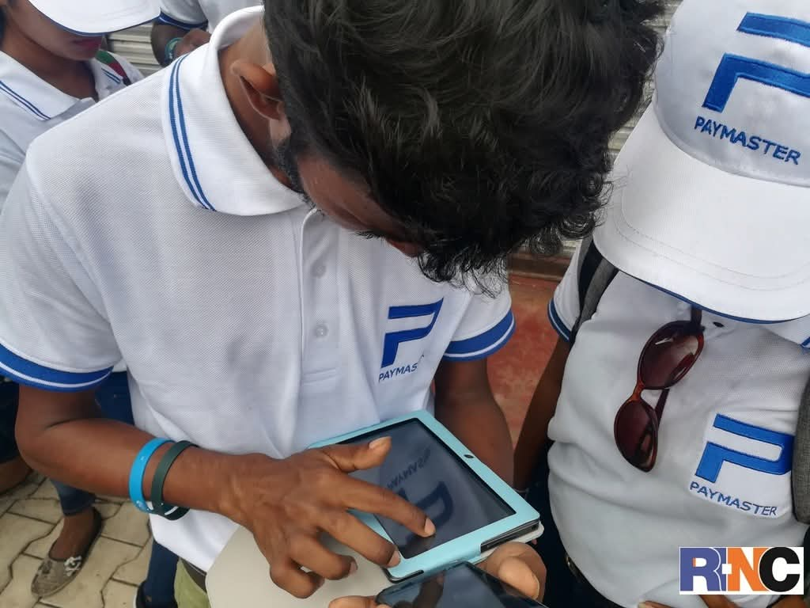
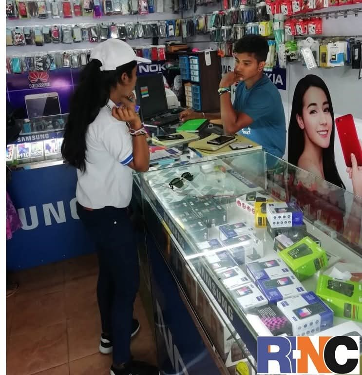
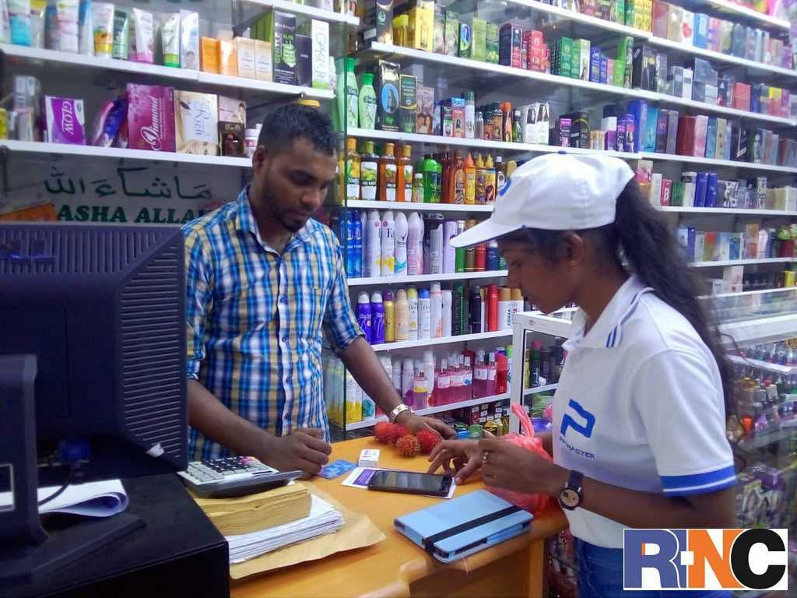

RNC Media Solutions partnered with Paymaster to create awareness for the launch of their innovative mobile payment app.
PayMaster is a leading, secure one-stop payment app in Sri Lanka designed for seamless mobile reloads, bill payments, and instant money transfers. Authorized by the Central Bank of Sri Lanka, it allows users to link bank accounts or cards to manage utility payments, insurance premiums, and merchant transactions (via LankaQR).
We executed a targeted digital campaign to educate users about the app's features and benefits, driving downloads and adoption.
Introduce a new fintech app in a competitive market and build user trust for secure financial transactions.
We developed multi-channel marketing strategies including social media campaigns, influencer partnerships, and targeted ads to highlight PayMaster's security, convenience, and Central Bank authorization. Our efforts focused on user education and app store visibility to maximize downloads.
Paymaster
Mobile App Launch Awareness
Digital Campaigns, User Education, App Store Promotion